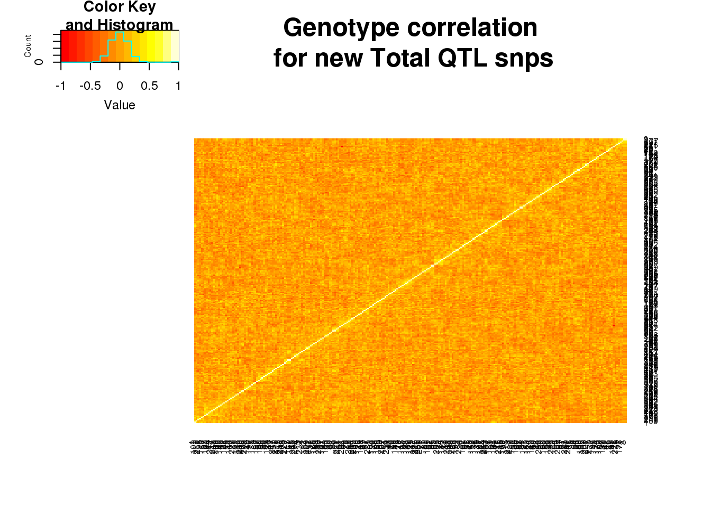
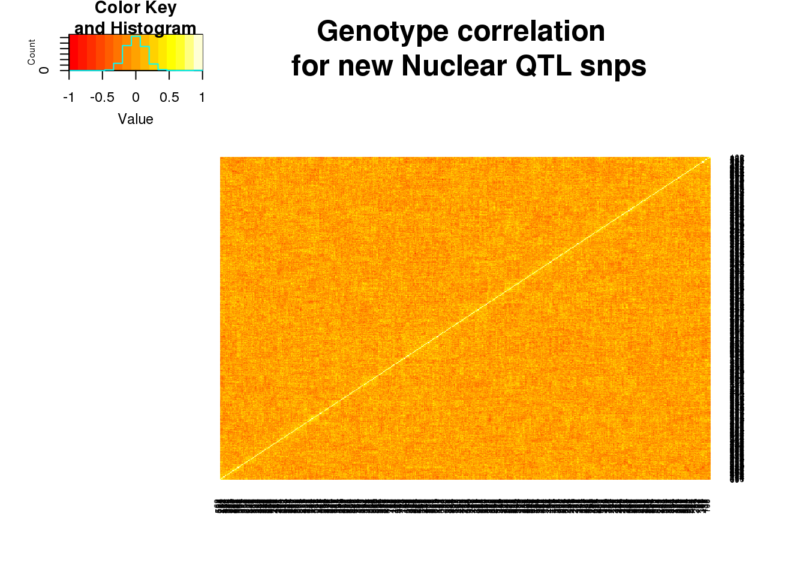

New QTL heatmap
Briana Mittleman
4/29/2019
Last updated: 2019-04-30
Checks: 6 0
Knit directory: apaQTL/analysis/
This reproducible R Markdown analysis was created with workflowr (version 1.3.0). The Checks tab describes the reproducibility checks that were applied when the results were created. The Past versions tab lists the development history.
Great! Since the R Markdown file has been committed to the Git repository, you know the exact version of the code that produced these results.
Great job! The global environment was empty. Objects defined in the global environment can affect the analysis in your R Markdown file in unknown ways. For reproduciblity it’s best to always run the code in an empty environment.
The command set.seed(20190411) was run prior to running the code in the R Markdown file. Setting a seed ensures that any results that rely on randomness, e.g. subsampling or permutations, are reproducible.
Great job! Recording the operating system, R version, and package versions is critical for reproducibility.
Nice! There were no cached chunks for this analysis, so you can be confident that you successfully produced the results during this run.
Great! You are using Git for version control. Tracking code development and connecting the code version to the results is critical for reproducibility. The version displayed above was the version of the Git repository at the time these results were generated.
Note that you need to be careful to ensure that all relevant files for the analysis have been committed to Git prior to generating the results (you can use wflow_publish or wflow_git_commit). workflowr only checks the R Markdown file, but you know if there are other scripts or data files that it depends on. Below is the status of the Git repository when the results were generated:
Ignored files:
Ignored: .DS_Store
Ignored: .Rhistory
Ignored: .Rproj.user/
Ignored: analysis/figure/
Ignored: output/.DS_Store
Untracked files:
Untracked: .Rprofile
Untracked: ._.DS_Store
Untracked: .gitignore
Untracked: _workflowr.yml
Untracked: analysis/._PASdescriptiveplots.Rmd
Untracked: analysis/._cuttoffPercUsage.Rmd
Untracked: analysis/cuttoffPercUsage.Rmd
Untracked: apaQTL.Rproj
Untracked: code/._SnakefilePAS
Untracked: code/._SnakefilefiltPAS
Untracked: code/._aAPAqtl_nominal39ind.sh
Untracked: code/._apaQTLCorrectPvalMakeQQ.R
Untracked: code/._apaQTL_Nominal.sh
Untracked: code/._apaQTL_permuted.sh
Untracked: code/._bed2saf.py
Untracked: code/._callPeaksYL.py
Untracked: code/._chooseAnno2SAF.py
Untracked: code/._chooseSignalSite
Untracked: code/._chooseSignalSite.py
Untracked: code/._cluster.json
Untracked: code/._clusterPAS.json
Untracked: code/._clusterfiltPAS.json
Untracked: code/._config.yaml
Untracked: code/._config2.yaml
Untracked: code/._configOLD.yaml
Untracked: code/._convertNumeric.py
Untracked: code/._dag.pdf
Untracked: code/._extractGenotypes.py
Untracked: code/._filter5perc.R
Untracked: code/._filter5percPheno.py
Untracked: code/._filterpeaks.py
Untracked: code/._fixFChead.py
Untracked: code/._make5percPeakbed.py
Untracked: code/._makeFileID.py
Untracked: code/._makePheno.py
Untracked: code/._mergeAllBam.sh
Untracked: code/._mergeByFracBam.sh
Untracked: code/._mergePeaks.sh
Untracked: code/._namePeaks.py
Untracked: code/._peak2PAS.py
Untracked: code/._peakFC.sh
Untracked: code/._pheno2countonly.R
Untracked: code/._quantassign2parsedpeak.py
Untracked: code/._selectNominalPvalues.py
Untracked: code/._snakemakePAS.batch
Untracked: code/._snakemakefiltPAS.batch
Untracked: code/._submit-snakemakePAS.sh
Untracked: code/._submit-snakemakefiltPAS.sh
Untracked: code/.snakemake/
Untracked: code/APAqtl_nominal.err
Untracked: code/APAqtl_nominal.out
Untracked: code/APAqtl_nominal_39.err
Untracked: code/APAqtl_nominal_39.out
Untracked: code/APAqtl_permuted.err
Untracked: code/APAqtl_permuted.out
Untracked: code/BothFracDTPlotGeneRegions.err
Untracked: code/BothFracDTPlotGeneRegions.out
Untracked: code/DistPAS2Sig.py
Untracked: code/README.md
Untracked: code/Rplots.pdf
Untracked: code/Upstream100Bases_general.py
Untracked: code/aAPAqtl_nominal39ind.sh
Untracked: code/bam2bw.err
Untracked: code/bam2bw.out
Untracked: code/dag.pdf
Untracked: code/dagPAS.pdf
Untracked: code/dagfiltPAS.pdf
Untracked: code/extractGenotypes.py
Untracked: code/findbuginpeaks.R
Untracked: code/get100upPAS.py
Untracked: code/getSeq100up.sh
Untracked: code/getseq100up.err
Untracked: code/getseq100up.out
Untracked: code/log/
Untracked: code/run_DistPAS2Sig.err
Untracked: code/run_DistPAS2Sig.out
Untracked: code/run_distPAS2Sig.sh
Untracked: code/selectNominalPvalues.py
Untracked: code/snakePASlog.out
Untracked: code/snakefiltPASlog.out
Untracked: data/DTmatrix/
Untracked: data/PAS/
Untracked: data/QTLGenotypes/
Untracked: data/README.md
Untracked: data/SignalSiteFiles/
Untracked: data/ThirtyNineIndQtl_nominal/
Untracked: data/apaQTLNominal/
Untracked: data/apaQTLPermuted/
Untracked: data/apaQTLs/
Untracked: data/assignedPeaks/
Untracked: data/bam/
Untracked: data/bam_clean/
Untracked: data/bam_waspfilt/
Untracked: data/bed_10up/
Untracked: data/bed_clean/
Untracked: data/bed_clean_sort/
Untracked: data/bed_waspfilter/
Untracked: data/bedsort_waspfilter/
Untracked: data/fastq/
Untracked: data/filterPeaks/
Untracked: data/inclusivePeaks/
Untracked: data/inclusivePeaks_FC/
Untracked: data/mergedBG/
Untracked: data/mergedBW_byfrac/
Untracked: data/mergedBam/
Untracked: data/mergedbyFracBam/
Untracked: data/nuc_10up/
Untracked: data/nuc_10upclean/
Untracked: data/peakCoverage/
Untracked: data/peaks_5perc/
Untracked: data/phenotype/
Untracked: data/phenotype_5perc/
Untracked: data/sort/
Untracked: data/sort_clean/
Untracked: data/sort_waspfilter/
Untracked: nohup.out
Untracked: output/._.DS_Store
Untracked: output/dtPlots/
Untracked: output/fastqc/
Unstaged changes:
Modified: analysis/PASusageQC.Rmd
Modified: analysis/corrbetweenind.Rmd
Deleted: code/Upstream10Bases_general.py
Modified: code/apaQTLCorrectPvalMakeQQ.R
Modified: code/apaQTL_permuted.sh
Modified: code/bed2saf.py
Deleted: code/test.txt
Note that any generated files, e.g. HTML, png, CSS, etc., are not included in this status report because it is ok for generated content to have uncommitted changes.
These are the previous versions of the R Markdown and HTML files. If you’ve configured a remote Git repository (see ?wflow_git_remote), click on the hyperlinks in the table below to view them.
| File | Version | Author | Date | Message |
|---|---|---|---|---|
| Rmd | cf09985 | brimittleman | 2019-04-30 | add beta corr plots |
| html | e3bdc3a | brimittleman | 2019-04-29 | Build site. |
| Rmd | 39a6572 | brimittleman | 2019-04-29 | add correlation genotype heatmap |
library(gdata)gdata: read.xls support for 'XLS' (Excel 97-2004) files ENABLED.gdata: Unable to load perl libaries needed by read.xls()
gdata: to support 'XLSX' (Excel 2007+) files.gdata: Run the function 'installXLSXsupport()'
gdata: to automatically download and install the perl
gdata: libaries needed to support Excel XLS and XLSX formats.
Attaching package: 'gdata'The following object is masked from 'package:stats':
nobsThe following object is masked from 'package:utils':
object.sizeThe following object is masked from 'package:base':
startsWithlibrary(workflowr)This is workflowr version 1.3.0
Run ?workflowr for help getting startedlibrary(gplots)
Attaching package: 'gplots'The following object is masked from 'package:stats':
lowesslibrary(tidyverse)── Attaching packages ──────────────────────────────── tidyverse 1.2.1 ──✔ ggplot2 3.1.0 ✔ purrr 0.3.2
✔ tibble 2.1.1 ✔ dplyr 0.8.0.1
✔ tidyr 0.8.3 ✔ stringr 1.3.1
✔ readr 1.3.1 ✔ forcats 0.3.0 ── Conflicts ─────────────────────────────────── tidyverse_conflicts() ──
✖ dplyr::combine() masks gdata::combine()
✖ dplyr::filter() masks stats::filter()
✖ dplyr::first() masks gdata::first()
✖ purrr::keep() masks gdata::keep()
✖ dplyr::lag() masks stats::lag()
✖ dplyr::last() masks gdata::last()library(cowplot)
Attaching package: 'cowplot'The following object is masked from 'package:ggplot2':
ggsaveCompare QTLs to those found with previous batch data
I have about double the QTLs hear compared to before resequencing batch 4. I will look at the new QTL to see if there is evidence for them being false positives. I am going to see if there is structure in the genotypes for these QTLs.
The old QTLs are from the threeprimeseq repository.
Total
Import old QTLs
oldtot=read.table("../../threeprimeseq/data/perm_APAqtl_GeneLocAnno_noMP_5percUs/filtered_APApeaks_merged_allchrom_refseqGenes.GeneLocAnno.NoMP_sm_quant.Total.fixed.pheno_5perc_permResBH.txt", header=T,stringsAsFactors = F) %>% separate(pid, into=c("Chr", "Start", "End", "PeakID"), sep=":") %>% separate(PeakID, into=c("Gene", "Strand","Peak"), sep="_")Warning: Expected 3 pieces. Additional pieces discarded in 3 rows [886,
887, 888].OldTotQTLs= oldtot %>% filter(-log10(bh)>=1)
nrow(OldTotQTLs)[1] 291Import new QTLs:
newTotQTLs=read.table("../data/apaQTLs/Total_apaQTLs_5fdr.txt", stringsAsFactors = F, header = T)
nrow(newTotQTLs)[1] 502Filter out those matching from the old:
UniqueNewTot=newTotQTLs %>% semi_join(OldTotQTLs, by="sid")There are only 105 new snps This makes sense because 1 sno associates with multiple peaks.
Write these out to fetch the genotypes:
write.table(UniqueNewTot, file="../data/apaQTLs/Total_apaQTLs_5fdr_NewUnique.txt", quote = F, col.names = F, row.names = F)Nuclear
oldnuc=read.table("../../threeprimeseq/data/perm_APAqtl_GeneLocAnno_noMP_5percUs/filtered_APApeaks_merged_allchrom_refseqGenes.GeneLocAnno.NoMP_sm_quant.Nuclear.fixed.pheno_5perc_permResBH.txt", header=T,stringsAsFactors = F) %>% separate(pid, into=c("Chr", "Start", "End", "PeakID"), sep=":") %>% separate(PeakID, into=c("Gene", "Strand","Peak"), sep="_")Warning: Expected 3 pieces. Additional pieces discarded in 3 rows [1056,
1057, 1058].OldNucQTLs= oldnuc %>% filter(-log10(bh)>=1)
nrow(OldNucQTLs)[1] 615Import new QTLs:
newNucQTLs=read.table("../data/apaQTLs/Nuclear_apaQTLs_5fdr.txt", stringsAsFactors = F, header = T)
nrow(newNucQTLs)[1] 1070Filter out those matching from the old:
UniqueNewNuc=newNucQTLs %>% semi_join(OldNucQTLs, by="sid")There are 200 new snps in this set.
write.table(UniqueNewNuc, file="../data/apaQTLs/Nuclear_apaQTLs_5fdr_NewUnique.txt", quote = F, col.names = F, row.names = F)Extract genotypes:
I wrote a script to pull the doses from the vcf file. Run it with:
python extractGenotypes.py ../data/apaQTLs/Nuclear_apaQTLs_5fdr_NewUnique.txt ../data/QTLGenotypes/Genotypes_NuclearapaQTLS_newunique.txt
python extractGenotypes.py ../data/apaQTLs/Total_apaQTLs_5fdr_NewUnique.txt ../data/QTLGenotypes/Genotypes_TotalapaQTLS_newunique.txtI also need the header from the VCF to have the individuals:
head -n14 /project2/gilad/briana/YRI_geno_hg19/allChrom.dose.filt.vcf | tail -n1 > ../data/QTLGenotypes/vcfheader.txt
#manually remove # and unneaded columns, keep snp and ind. vcfhead=read.table("../data/QTLGenotypes/vcfheader.txt", header = T)input sample list:
samples=read.table("../data/phenotype/SAMPLE.txt")
samplist=as.vector(samples$V1)Total:
totgeno=read.table("../data/QTLGenotypes/Genotypes_TotalapaQTLS_newunique.txt", col.names = colnames(vcfhead)) %>% select(samplist) %>% t()Correlation:
totgeneCorr=round(cor(totgeno),2)
heatmap.2(as.matrix(totgeneCorr),trace="none", dendrogram =c("none"), main="Genotype correlation\n for new Total QTL snps")
| Version | Author | Date |
|---|---|---|
| e3bdc3a | brimittleman | 2019-04-29 |
Nuclear
nucgeno=read.table("../data/QTLGenotypes/Genotypes_NuclearapaQTLS_newunique.txt", col.names = colnames(vcfhead)) %>% select(samplist) %>% t()Correlation:
nucgeneCorr=round(cor(nucgeno),2)
heatmap.2(as.matrix(nucgeneCorr),trace="none", dendrogram =c("none"),main="Genotype correlation \n for new Nuclear QTL snps")
| Version | Author | Date |
|---|---|---|
| e3bdc3a | brimittleman | 2019-04-29 |
Compare beta values in 55 vs 39
I want to make a scatter plot comaparring the new QTL associations in the 55 vs 39 individauls. If the qtls are real we expect a high correlation.
To do this I can recall the qtls with a smaller sample list excluding the 15 new individuals.
I need to make a list of the individuals not in the 4th batch.
batch1.2.3=read.table("../data/MetaDataSequencing.txt", header=T,stringsAsFactors = F)%>% filter(fraction=="total") %>% select(line, batch) %>% filter(batch != 4)samplelist=read.table("../data/phenotype/SAMPLE.txt", col.names = c("line"),stringsAsFactors = F)Make a new directory for the 39ind qtls:
mkdir ../data/ThirtyNineIndQtl_nominalFilter the sample list
samplelist_39= samplelist %>% semi_join(batch1.2.3, by="line")write.table(samplelist_39, file="../data/ThirtyNineIndQtl_nominal/samplelist39.txt", col.names = F, row.names = F, quote = F)Run the QTL code with this sample list
sbatch aAPAqtl_nominal39ind.sh
Concatinate results:
cat APApeak_Phenotype_GeneLocAnno.Total.5perc.fc.gz.qqnorm_chr* > APApeak_Phenotype_GeneLocAnno.Total.5perc.fc.gz.qqnorm_AllChr.txt
cat APApeak_Phenotype_GeneLocAnno.Nuclear.5perc.fc.gz.qqnorm_chr* > APApeak_Phenotype_GeneLocAnno.Nuclear.5perc.fc.gz.qqnorm_AllChr.txt
I want to filter the results for the new snps in the uniquenewtot. These results are in data/apaQTLs
I need to write a script that makes a dictionary with each of the new QTLs in the format above. Then I can run throguh the nominal values and keep only the values in the dictionary.
I can run this on the 55 and 39 nominal files then combine the files to create the scatterplot.
total
python selectNominalPvalues.py ../data/apaQTLs/Total_apaQTLs_5fdr_NewUnique.txt ../data/ThirtyNineIndQtl_nominal/APApeak_Phenotype_GeneLocAnno.Total.5perc.fc.gz.qqnorm_AllChr.txt ../data/ThirtyNineIndQtl_nominal/Total_apaQTLs_NewUniqNom_37ing.txt
python selectNominalPvalues.py ../data/apaQTLs/Total_apaQTLs_5fdr_NewUnique.txt ../data/apaQTLNominal/APApeak_Phenotype_GeneLocAnno.Total.5perc.fc.gz.qqnorm_AllChr.txt ../data/ThirtyNineIndQtl_nominal/Total_apaQTLs_NewUniqNom_55ind.txt
Import files:
newin37_tot=read.table("../data/ThirtyNineIndQtl_nominal/Total_apaQTLs_NewUniqNom_37ing.txt",col.names=c("peakID", "snp", "dist", "Nompval39","Beta39"), stringsAsFactors = F)%>% select(peakID, snp, Beta39)
newin54_tot=read.table("../data/ThirtyNineIndQtl_nominal/Total_apaQTLs_NewUniqNom_55ind.txt",col.names=c("peakID", "snp", "dist", "Nompval54","Beta54"), stringsAsFactors = F) %>% select(peakID, snp, Beta54)Join these:
newinboth=newin54_tot %>% full_join(newin37_tot, by=c("peakID", "snp"))total_qtlind=ggplot(newinboth,aes(x=Beta54, y=Beta39)) + geom_point() + labs(title="New Total apaQTLs \nin different ind. sets", ylab="Beta 39 ind", xlab="Beta 55 ind")nuclear
python selectNominalPvalues.py ../data/apaQTLs/Nuclear_apaQTLs_5fdr_NewUnique.txt ../data/ThirtyNineIndQtl_nominal/APApeak_Phenotype_GeneLocAnno.Nuclear.5perc.fc.gz.qqnorm_AllChr.txt ../data/ThirtyNineIndQtl_nominal/Nuclear_apaQTLs_NewUniqNom_37ing.txt
python selectNominalPvalues.py ../data/apaQTLs/Nuclear_apaQTLs_5fdr_NewUnique.txt ../data/apaQTLNominal/APApeak_Phenotype_GeneLocAnno.Nuclear.5perc.fc.gz.qqnorm_AllChr.txt ../data/ThirtyNineIndQtl_nominal/Nuclear_apaQTLs_NewUniqNom_55ind.txtnewin37_nuc=read.table("../data/ThirtyNineIndQtl_nominal/Nuclear_apaQTLs_NewUniqNom_37ing.txt",col.names=c("peakID", "snp", "dist", "Nompval39","Beta39"), stringsAsFactors = F)%>% select(peakID, snp, Beta39)
newin54_nuc=read.table("../data/ThirtyNineIndQtl_nominal/Nuclear_apaQTLs_NewUniqNom_55ind.txt",col.names=c("peakID", "snp", "dist", "Nompval54","Beta54"), stringsAsFactors = F) %>% select(peakID, snp, Beta54)Join these:
newinboth_nuc=newin54_nuc %>% full_join(newin37_nuc, by=c("peakID", "snp"))nuclear_qtlind=ggplot(newinboth_nuc,aes(x=Beta54, y=Beta39)) + geom_point() + labs(title="New Nuclear apaQTLs\n in different ind. sets", ylab="Beta 39 ind", xlab="Beta 55 ind")plot both:
plot_grid(total_qtlind, nuclear_qtlind)
sessionInfo()R version 3.5.1 (2018-07-02)
Platform: x86_64-pc-linux-gnu (64-bit)
Running under: Scientific Linux 7.4 (Nitrogen)
Matrix products: default
BLAS/LAPACK: /software/openblas-0.2.19-el7-x86_64/lib/libopenblas_haswellp-r0.2.19.so
locale:
[1] LC_CTYPE=en_US.UTF-8 LC_NUMERIC=C
[3] LC_TIME=en_US.UTF-8 LC_COLLATE=en_US.UTF-8
[5] LC_MONETARY=en_US.UTF-8 LC_MESSAGES=en_US.UTF-8
[7] LC_PAPER=en_US.UTF-8 LC_NAME=C
[9] LC_ADDRESS=C LC_TELEPHONE=C
[11] LC_MEASUREMENT=en_US.UTF-8 LC_IDENTIFICATION=C
attached base packages:
[1] stats graphics grDevices utils datasets methods base
other attached packages:
[1] cowplot_0.9.4 forcats_0.3.0 stringr_1.3.1 dplyr_0.8.0.1
[5] purrr_0.3.2 readr_1.3.1 tidyr_0.8.3 tibble_2.1.1
[9] ggplot2_3.1.0 tidyverse_1.2.1 gplots_3.0.1 workflowr_1.3.0
[13] gdata_2.18.0
loaded via a namespace (and not attached):
[1] gtools_3.8.1 tidyselect_0.2.5 haven_1.1.2
[4] lattice_0.20-38 colorspace_1.3-2 generics_0.0.2
[7] htmltools_0.3.6 yaml_2.2.0 rlang_0.3.1
[10] pillar_1.3.1 glue_1.3.0 withr_2.1.2
[13] modelr_0.1.2 readxl_1.1.0 plyr_1.8.4
[16] munsell_0.5.0 gtable_0.2.0 cellranger_1.1.0
[19] rvest_0.3.2 caTools_1.17.1.1 evaluate_0.12
[22] labeling_0.3 knitr_1.20 broom_0.5.1
[25] Rcpp_1.0.0 KernSmooth_2.23-15 scales_1.0.0
[28] backports_1.1.2 jsonlite_1.6 fs_1.2.6
[31] hms_0.4.2 digest_0.6.18 stringi_1.2.4
[34] grid_3.5.1 rprojroot_1.3-2 cli_1.0.1
[37] tools_3.5.1 bitops_1.0-6 magrittr_1.5
[40] lazyeval_0.2.1 crayon_1.3.4 whisker_0.3-2
[43] pkgconfig_2.0.2 xml2_1.2.0 lubridate_1.7.4
[46] assertthat_0.2.0 rmarkdown_1.10 httr_1.3.1
[49] rstudioapi_0.10 R6_2.3.0 nlme_3.1-137
[52] git2r_0.23.0 compiler_3.5.1